THE FRILLY DISCOGRAPHY:
THE FRILLY DISCOGRAPHY:SO FAR
ALBUMS:
THE FRILLY DISCOGRAPHY:ALBUMS:
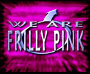 WE ARE FRILLY PINK
LP1279 (Limited Promo) -89
THE PINK EP
FPEP1 -90
Pirate Rekkords
FRILLY FOREVER
NASTYCD666 -91
Nasty Records
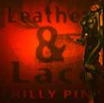 LEATHER AND LACE
FPCD1 -93
Black Death Records
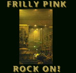 ROCK ON!
BLACKCD12 -94
Black Death Records
MANO A MANO
BLACKCD64 -96
Black Death Records
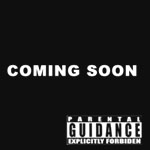 CONQUEST OF HELL
BLACKCD162 -97
Black Death Records
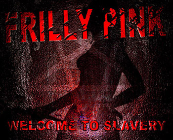
WELCOME TO SLAVERY
BLACKCD911 -98
Black Death Records
1. Pumping Iron II Radio Edit
1. Nuclear Power 7"
1. Pumping Iron III
1. King of the Jungle (7" Version)
1. Mano a Mano
1. I Wish I Were Clint Eastwood 7" Version
1. Over the Top Extended Version
1. King of the Jungle
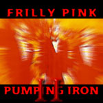
PUMPING IRON II
(limited 12" vinyl) -88
2. Pumping Iron II Evil Version
3. Pumping Iron II Neverending mix
4. Concrete Conquest

NUCLEAR POWER
(limited 12" vinyl) FPS187 (From "The
Pink EP") -90
2. Nuclear Power (Machismo Version)
3. Metalmaster
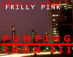
PUMPING IRON III
FPS322 (From the album "Leather and Lace") -93
2. Pumping Power
3. Nasty Iron
4. Toe Tickler
KING OF THE JUNGLE
FPS547 (From the album "Leather and Lace") -94
2. King of the Jungle (12" Version)
3. Queen of the Jungle
4. King of the Jungle (Sirius Globemixx)
5. Antichrist
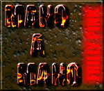
MANO A MANO
FPS835 (From the album "Mano a Mano") -96
2. Mano a Mano (Speedy Gonsalez Mix)
3. Mano a Mano (Faster Than Yngwie Version)
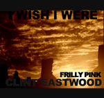
I WISH I WERE CLINT EASTWOOD
FPS9191 (From the album "Mano a Mano") March -97
2. I Wish I Were Clint Eastwood Radio Edit
3. Dirty Harry
4. I Wish I Were Clint Eastwood (Hellrockers Mix)
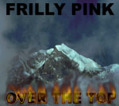
OVER THE TOP
FPS9234 (From the album "Conquest of Hell") April -97
2. Over the Top 7" Mix
3. Black Latex Trouble
4. Over the Top Instrumental
5. Over the Top Acoustic Version
6. Black Latex Trouble (Hardcore Rockers Mix)
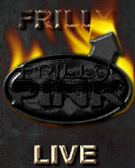
Frilly Live
BLACKVID12 March -97
2. I Wish I Were Clint Eastwood
3. Mano a Mano
4. Pumping Iron II
5. Nuclear Power
6. Pumping Iron III
7. Fuzzy Navel
8. Rock On!
9. Over the Top
+ A 45 minute interview with the band